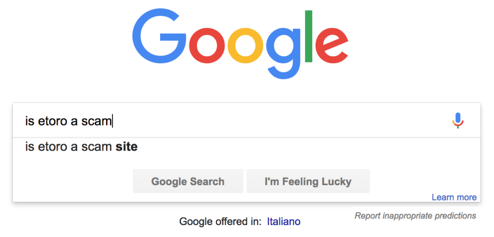
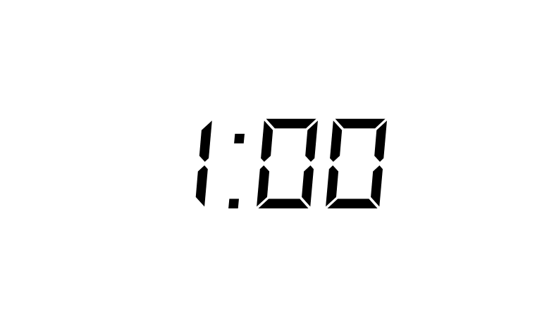
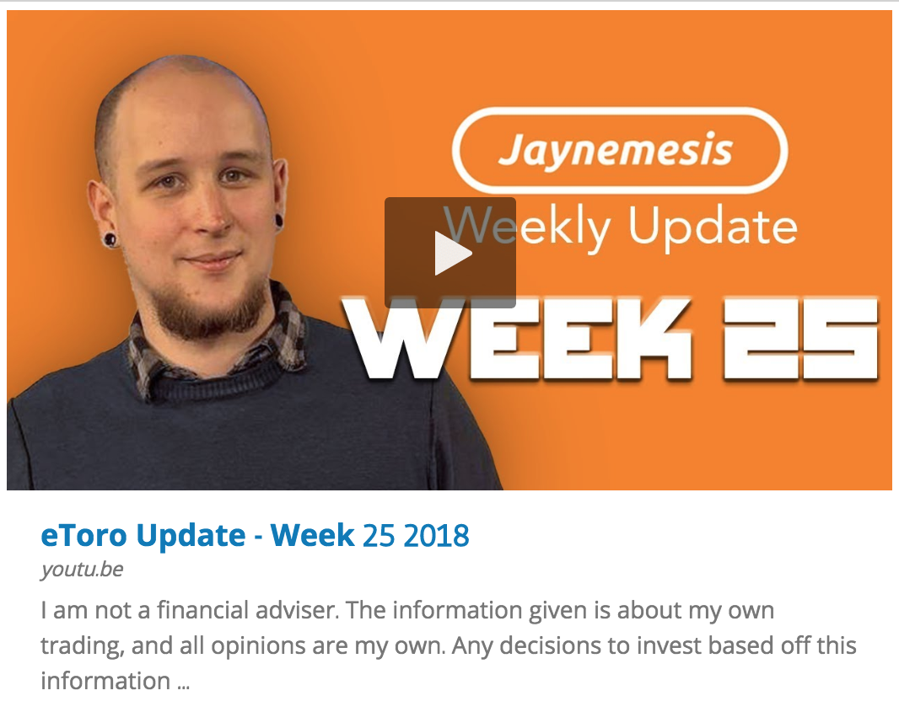

Eine grossartige Frage, und die erste, die ich mir auch gestellt habe. Nachdem ich meinen Kanal ueber ein Jahr lang betrieben habe, sind die Fragen „Ist eToro Betrug?" und „Kann man denen vertrauen?" bei weitem die am haeufigsten gestellten von Zuschauern. Aus gutem Grund — ich hatte genau die gleichen Fragen, bevor ich Geld eingezahlt habe.
Warum wollte ich das wissen?
Ich hatte Videos ueber Hochfrequenzhandel gesehen — diese Physiker und intensiven Mathematiker, die Code (Bots) fuer Grossbanken schreiben, der automatisch handelt und taeglich Millionen verdient. Also dachte ich: „Moment mal, vielleicht gibt es eine Seite, auf der Leute ihre Bots nutzen lassen, um Geld zu verdienen, und man gibt ihnen einen Anteil am Gewinn..." Ich habe gesucht und nichts gefunden. Dann habe ich eToro entdeckt.
Google-Suche — „Ist eToro Betrug?"
Da fing ich an zu recherchieren. Ich bin kein reicher Mann. Ich habe keine Erfahrung mit dem Handel. Ich bin ein absoluter Anfaenger. Also musste ich wissen, ob ich betrogen werde — heutzutage ist das durchaus moeglich, es gibt viele Betrueger da draussen.

Also ging ich zu Google: „Ist eToro Betrug?" tippte ich in die kleine Box, und ich sah ein paar Erfahrungsberichte und viele Werbeartikel. Aber es schien serioes. Ich meldete mich an. Jeder Schritt im Prozess machte mir Angst — warum wollten die ein Foto von meinem Ausweis? Warum brauchten sie eine Rechnung mit meiner Adresse?
Warum sie nach einem Ausweis fragen
Ich erfuhr, dass das bei Boersen bei der Anmeldung ziemlich normal ist — hat etwas mit Geldwaeschegesetzen zu tun. Ich mochte es trotzdem nicht, aber zumindest schien es Standard zu sein. Dann kamen die Fragen „Wie viel Geld werden Sie einzahlen?" und „Was ist Ihre bisherige Handelserfahrung?" — ich fuehlte mich, als wuerde ich versuchen, mich an einem Tuersteher vorbeizuluegen. Aber nach einer Weile hatte ich alles hochgeladen und war drin.
Meine erste Einzahlung bei eToro
Ich zahlte einen kleinen Betrag ein, nur zum Testen. Dann liess ich ihn ein oder zwei Wochen dort und wollte dann meine grosse Frage testen: Kann ich mein Geld tatsaechlich zurueckbekommen?
Der echte Test — Konnte ich abheben?
Also hob ich es ab — alles. Ich musste einfach ueberpruefen, ob ich es wirklich zurueckbekomme. Wer weiss? Vielleicht sind sie einfach dreiste Diebe!

Ich bekam einen Anruf von eToro, ob alles in Ordnung sei. Das erschreckte mich — ich dachte „Jetzt geht's los..." aber ich sagte, ich brauchte einfach das Geld, und sie sagten „OK" und das war's. Ein paar Tage spaeter war das Geld zurueck auf meinem Konto (abzueglich der Auszahlungsgebuehr). Das war eine riesige Erleichterung.
Mehr Geld auf eToro
An diesem Punkt, da ich mich viel sicherer fuehlte, lud ich etwa 3.500 $ hoch — so ziemlich alles, was ich hatte — und fing an zu lernen, wie die Seite funktioniert. Spaeter hob ich einen grossen Teil ab, um eine Kamera zu kaufen und Videos ueber meine Erfahrungen zu machen. Wieder bekam ich den Verkaufsanruf von eToro, wieder fragten sie, ob etwas nicht stimmt. Wieder waren sie so schnell weg, wie sie angerufen hatten, und mein Geld war innerhalb weniger Tage zurueck.
Also, ist eToro Betrug?
Warum es serioes ist
- Reguliert durch FCA, CySEC, ASIC
- Ueber 30 Mio. Nutzer weltweit
- Seit 2007 aktiv
- Auszahlungen getestet und bestaetigt
- Transparente Gebuehrenstruktur
- Echter Kundensupport
Nee, ich denke nicht. Ich bin seit Jahren dabei, habe Trader kopiert, manuelle Trades gemacht, Geld eingezahlt, Geld abgehoben, und bisher lief alles ziemlich reibungslos. So wie ich es sehe: Wir leben im Informationszeitalter — wenn du Leute betruegst, wird es jeder ziemlich schnell erfahren. Es gibt Blogs, Foren, Bewertungsseiten, Reddit, Quora und eine Million Wege, gehoert zu werden. Bei weit verbreiteten Berichten ueber Diebstahl oder Leute, die ihr Geld nicht zurueckbekommen, wuerde sich niemand anmelden.
Sie verdienen Geld, egal ob wir gewinnen oder verlieren
Du kennst den Spruch „Das Casino gewinnt immer"? Nun, die Boerse auch. Wenn du eine bauen kannst und sie so gut machst, dass Leute aus der ganzen Welt sie nutzen, willst du auf keinen Fall diese Goldgrube durch Betrug gefaehrden. Zumindest kann ich mir nicht vorstellen, warum man das tun wuerde.
Wie verdient eToro eigentlich Geld?
Jedes Mal, wenn du einen Trade auf eToro machst, nehmen sie eine sogenannte „Spread-Gebuehr" — eine kleine Gebuehr, die in den Trade selbst eingebaut ist. Egal ob du bei diesem einzelnen Trade Gewinn oder Verlust machst, sie kassieren ihre Spread-Gebuehr.

Warum sind meine Trades sofort im Minus, wenn ich sie oeffne?
Ja, wann immer du einen neuen Trade eroeffnest, wirst du sehen, dass er sofort im Minus ist — nur ein winziges bisschen Geld, aber es ist ein Verlust. Das ist die Spread-Gebuehr. eToro hat diese Gebuehr sofort innerhalb des Trades angewendet. Wenn dein Trade im Wert steigt (hoffentlich), wirst du sehen, wie er profitabel wird — an diesem Punkt hast du die Spread-Gebuehr bezahlt und alles, was du darueber hinaus machst, gehoert dir.
Sie berechnen ausserdem eine separate Auszahlungsgebuehr, wenn du dein Geld von der Seite abziehst, und da alles bei eToro in Dollar ist, wenden sie einen Wechselkurs an, wenn du Geld in anderen Waehrungen ein- oder auszahlst.
Meine ehrliche Gesamtmeinung
Bisher war es grossartig — ich habe viel gelernt und Copy Trading genossen. Die Spread-Gebuehren koennen manchmal etwas hoch sein, wenn Assets volatil sind, und manchmal kann der Kundensupport langsam sein, aber ich denke immer noch, dass es eine ausgezeichnete Plattform ist und ich bin froh, dass ich sie gefunden habe.
Die Seite ist wirklich sozial — du kannst die Profile der Leute, die du kopierst, kommentieren und an Diskussionen mit ihnen teilnehmen. Nicht alle Ratschlaege, die du auf einer Social-Trading-Seite siehst, sind gute Ratschlaege, aber es sind echte Menschen, mit echtem Geld, und die Leute, die ich kopiere, machen echte Trades.